Many of the objects that can be incorporated into a Scribus document are vector drawings, and as such can be edited. Even though the title seems to refer to the geometric shapes that can be easily created, the same procedures can be applied to all of these:
As you may be aware or recall, when you consider the ability to convert from one kind of object to another, there is a great deal of flexibility in what you can do. Here we have edited the shape of a text frame, then taken a large glyph, converted to an outline, then converted to an image frame, and finally we take a polygon and convert to a text frame. The final state of the object determines its editing capabilities, so the large B can be edited like any other image frame, the polygon can have its text edited in Story Editor.
|
Here is our Shape tab from Properties, or at least the bigger part of it. We'll get to what's left (Fill Rules) farther down below in Combining Polygons. Let's look at the Round Corners item first, since it's a simple kind of edit, that does what it says. Since the spinbox is active, we know that the object this relates to is either a "regular" frame, like text, image, or render frame, or it's the rectangle shape (and not the 4-sided polygon). What the number in the spinbox refers to is the radius of the corner. You can keep going up on this until 2 adjacent rounding operations meet – if you start with a square, for example, you will end up with a circle. A rectangle looks more like a capsule with flattened sides and rounded ends. This could just as easily be a text or image frame. |
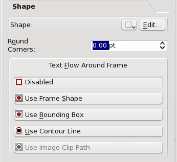 |
| 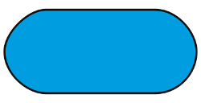 |
The next quickie edit is the icon with the drop-down arrow, next to the Edit button. The drop-down lists are the familiar ones from the toolbar shape icon, but this is a transformation, not making a new shape. Thus we can convert our capsule to a squat and overfed-looking Tux if we want. In fact, we can do this with text and other frames as well, although you can expect the utility of a Tux-shaped text frame to be limited. |
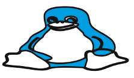 |
 |
Now we get to the main event here, editing a shape/frame with its nodes and control points. When you click the Edit button on the Shape tab, the Nodes dialog to the right pops up and your shape/frame is transformed something like what you see on the left, with these blue and magenta circles. Something to note at the outset is that generally where there is a sharp corner in a shape you only see the blue nodes, but where there is a smooth curve of some sort, these magenta control points are visible, sticking out like antennae from the node. Actually, all of these nodes have control points, but you don't see them when they are at the same position as the node. |
|
| 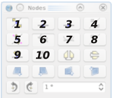 | 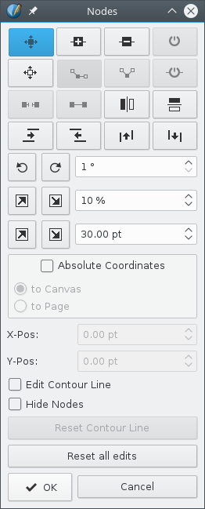 | |
As we begin to describe the usage of the shape edit dialog, let's use this numbering scheme to refer to the various buttons on the dialog to the far right. When the dialog first comes up, button 1 will be selected, in which case you can move the blue nodes using the mouse. In addition to moving individual nodes, you can click-drag a line segment between nodes and move the segment along with its nodes. The segment retains its size, shape, and orientation – adjoining line segments do the adjusting. If you click button 5, you can then move the magenta control points. Once you have clicked on a node or control point it turns red, and at this point, in addition to moving it with the mouse, the X-Pos and Y-Pos spinboxes become active and refer to this selected point. If Absolute Coordinates is not checked, then these numbers are relative to the upper left corner of the bounding box for the frame or shape (see What is a Bounding Box? below). Let's mention at this point that all of our editing steps here are Undo-able, i.e. can be undone with Ctrl-Z in case you change your mind. Button 2 allows for adding nodes, though they must be added somewhere along the line of the shape. Button 3 deletes the node you subsequently click on. The tooltip for button 4 says Reset Control Points, but it is not clear how to make this button active. Button 6, when clicked, allows for each individual control point to move independently. If button 7 is clicked, then the two control points at a node will arrange themselves on opposite side of a node and equidistant from it once either one is moved. This tends to produce a very smooth curved transition through the node. When a control point is selected, button 8 will be active and when clicked, resets the control point to its node's position. Button 9 will split the curve/shape when it is checked – click this button, then click anywhere along the line. It will appear that a node has been created, like using button 2, but actually there are now 2 nodes at that position, so that if you move one, you will see the line is broken. Button 10 performs the opposite procedure, by joining a broken curve or shape (and can also be used to make a closed figure out of a Bezier curve). Finishing out these first 3 rows, the unnumbered buttons next to the one we've labeled 10 flip the shape horizontally or vertically, respectively. |
||
The first full row of buttons below the numbered ones are skewing operations. Each click on the button skews the shape in a small increment. Here we see the results of skewing using the 4 buttons, left to right, just like our images, each being clicked 10 times. Initially, the tops of all these shapes had the same Y-Pos. |
 |
Below the 4 rows of buttons we have spinboxes paired with buttons to the left. These are quite intuitive and the two buttons are complementary actions, for rotation, and then two ways to enlarge and shrink, either by percentage or number of points. Each click produces the amount of change indicated in the spinbox.
| 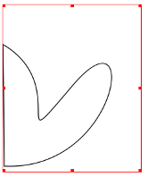 | 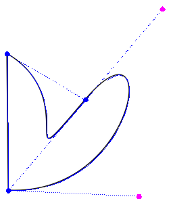 | A Bounding Box is the rectangular space that defines the boundaries of a shape and all of its descriptive components. Here we see this illustrated on the far left, noting that the bounding box is much larger than the actual shape. When we go to edit mode in the near left, we see that the box must include all of the control points for the shape. There is a constraint on the X-Pos and Y-Pos so that they cannot be less than 0.0 when referring to the Bounding Box, so you will not be able to use the spinboxes to move nodes or control points lower than this value. Nonetheless, they can be moved with the mouse and the bounding box's left upper corner will then reposition. Using Absolute Coordinates is another workaround, since these values can be less than zero. Use Bounding Box is one of the choices for Text Flow mode, as shown in the Shape tab graphic. |
Or maybe we should say, what is it for? A contour line is itself never visible, except in this editing mode. Let's imagine you have a frame/shape which is not rectangular, and you wish to flow around it, but not necessarily follow the contours of the frame/shape. Even if it's a shape and has a bounding box, as we saw above sometimes the bounding box is not what we want either, therefore we can use a contour line to flow in our precisely desired way. While you are editing your contour line, you will see the text flow change to help you get the look you want.
| 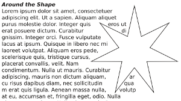 | 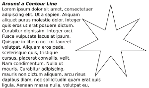 |
Contour lines are not considered part of the graphic components, so therefore its nodes and control points can be outside the bounding box.
This operation really applies to both polygons and shapes, and mixtures of the two. The idea is to combine 2 or more shapes on different levels into a single one.
 |
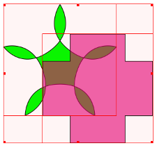 | 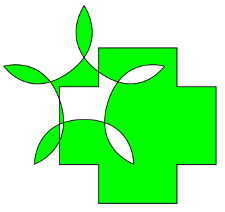 |
This top row shows our starting point, with a shape overlapping a polygon, the shape having some transparency. In the middle, we select both by click-dragging the mouse around them, then select Item > Combine Polygons from the menu, to get what we see on the right. With this method, the colors derive from the bottom object.
| 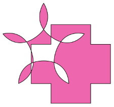 |  |
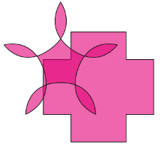 |
In the left graphic here, we selected the shapes by holding down Shift and clicking the cross shape first, then combined, so even if you combine more than two shapes this way, the colors derive from the first one clicked. The middle shows that our combined polygon has retained the transparency. On the right, we see the results of Item > Split Polygons. It is not recommended to Undo combined polygons, since results are unpredictable and may cause a subsequent crash, depending on what you do next.
Something else to point out here is that in the bottom row, the leftmost combination uses an Even-Odd Fill Rule from the Shape tab, and the middle uses Non Zero. You apply the fill rule after you combine polygons.
These are some improved methods for combining shapes and polygons in various ways. They can only be applied to shapes and polygons, not text or image frames, though once again, conversion to text or images frames is still possible later.
| 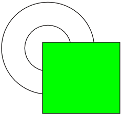 | Let's start with this situation, two standard shapes. First, select both shapes, and then select from the menu |
||
 |
What you get from this is the dialog to the left.
Staying with this initial default choice of combining the shapes, we see to the right that we must choose which color the final shape will have – just as with Combining Polygons, the final shape can only have one set of colors for Fill and Stroke. As you can see, there is an option for choosing other colors for each, using the Custom Colors radio button. What about the Keep button? If chosen, this will retain the elements of the shape. Perhaps best to illustrate the difference between the two with the examples below. On the left below is when you do not check Keep, and to its right what happens when you do check Keep. It's also worth repeating that we stayed with using the First Shape for color choices.
|
Subtraction | Intersection | Exclusion | Break Apart |
| 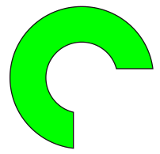 | 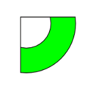 | 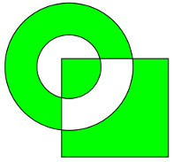 | 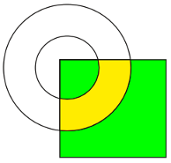 |
Break Apart pulled apart | |||
Break Apart has some interesting features. You may recall that above I said that the final shape could only have one sort of fill color, so what happened here? In contrast to all other choices, with Break Apart I can specify a color for the intersection of the two shapes, so here I have chosen a custom color. What you then find is the meaning of the Break Apart name – these are really 3 separate shapes now, which I can move apart if I wish. After that, conversion of these to other kinds of frames is also possible, as seen here, and also note that the upper right shape behaves as one image frame. A final note with Path Operations is that Undo will likely have some effect, but will not reverse whatever operation you carried out here. |
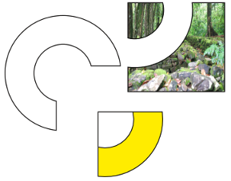 | ||
If you have a single shape selected, this will be an option under Item > Path Tools. The name for this operation is admittedly a bit obtuse, so once again simply showing what it does is more worthwhile.
| 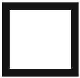 | To do this, let's create a rectangular shape, and increase its stroke width to 10 points. |
In the upper left corner of the rectangle, seen at about 900% zoom, we begin to understand what happened. The space which was formerly the border (stroke) is now the fill, and there has been applied a stroke to the boundaries of this (I have increased the hairline stroke to 1 point so that it is clearer). If we had started with a red color to the stroke, then the new stroke would also have been red. | |
| 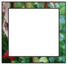 | To even better understand what has happened, let's convert this to an image frame and load an image. Now we can see that the space of the frame is limited to the original stroke space, so in a sense we have created a picture frame from this original rectangle. |